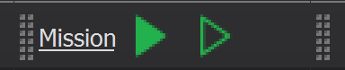
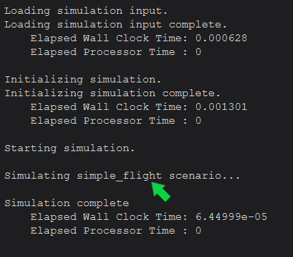

Scenarios and Projects¶
AFSIM Projects are a collection of files consisting of one or more scenarios and components (such as platforms, sensors, communications, etc.).
AFSIM Scenarios are files consisting of commands and scripts. They define specific platforms to be simulated and platform_types which may be used to dynamically add platforms to a simulation.
Scenario development and editing can be performed through the Wizard IDE.
Scenarios may be simulated with Mission and Warlock.
The result of an executed scenario is a simulation.
Quick Start¶
Tip
The simple_flight scenario will be built upon in subsequent topic discussions. It will begin as a simple scenario, and grow in complexity throughout this guide.
New projects are created in Wizard at startup. Project directories and files may be created to organize project components, outputs, and configurations.
Scenarios consist mainly of commands and scripts which manipulate platforms. The following text is an example of a simple scenario:
# simple_flight demo
execute at_time 0.1 sec absolute
writeln("Simulating simple_flight scenario...");
end_execute
In this scenario the execute command runs the writeln script to output “Simulating simple_flight scenario…” in the simulation log and/or console.
Note
Scenarios or projects may be loaded into Wizard. Scenarios can simulated with Mission and Warlock, but projects can only be opened from Wizard.
Create a New Project and Scenario File¶
To create a new project and add the “simple_flight” scenario perform the following steps:
Launch Wizard.
From the Wizard Startup window, click the “New…” button on the bottom right.
Navigate to the desired working directory.
Create a new directory called Simple Flight.
In the Simple Flight folder, create a new project file and save as simple_flight.afproj.
In the Wizard File menu, click “New File…”.
Enter simple_flight.txt and click “OK”.
{kind=link}
Wizard will automatically open simple_flight.txt for editing.
The file will also appear in Wizard’s project browser. Right click the file to open its context menu.
Select Set as Startup File.
{kind=link}
This indicates to Wizard that simple_flight.txt is a scenario file associated with the simple_flight project. Scenario files show the Wizard’s Purple Hat as the file icon, and the startup file names are underlined. The number in parentheses after simple_flight.txt indicates that this is the first file in the start-up file list for this scenario. Startup files open automatically when the project is opened. Finally, Wizard provides syntax highlighting only for project files.
Tip
If ever you open a file, and expect Wizard to provide syntax highlighting, but none appears, ensure the file is included in the project either as a startup file, or as an included file, somewhere within a startup file.
Building a Scenario Startup File¶
To get started, type the following code block in simple_flight.txt.
# simple_flight demo for AFSIM User Manual simulation_name "Simple Flight" execute at_time 0.1 sec absolute writeln("Simulating simple_flight scenario..."); end_execute end_time 90 sec
Save the file.
In order to maintain the scalability of a large project, containing one or more large scenarios, it’s important to understand the role of a startup file. Startup files typically include one or more of the following:
High level information about the scenario and its purpose
Definitions to setup various output formats
Simulation level commands (i.e. Simulation end time settings, or timed script executions, etc.)
File includes to provide resources to the scenario, including:
platform_type definitions
platform parts
platform laydowns for one or more teams
Run the Scenario From Wizard¶
To run the scenario in Mission from Wizard, first ensure that Mission is displayed to the left of the Run Button in Wizard’s Sim Execution Toolbar .
{kind=link}
Tip
If “Mission” is not displayed next to the Run Button, click the current name to open Wizard’s Sim Execution preferences, then select Mission from the list, and click “Apply” to save changes.
Next, click the Run Button, and observe the console output within Wizard’s Output widget.
Note
If the Output Widget is not visible. It can be shown by clicking “View” in the Wizard Menu Bar, and checking the “Output” option.
By default, Mission will print metadata to the Output view, including version information, plugins, extensions, and basic runtime statistics.
For this example the message, “Simulating simple_flight scenario…” is also printed, between “Starting simulation.” and “Simulation complete”.
{kind=link}
Run the Scenario from Mission on Command Line¶
To run this scenario from Mission on the command line, open a command line interface and navigate to the simple_flight directory.
Next, input the following command:
mission simple_flight.txt
Mission will then simulate the scenario, and in this case, print all output directly to the command line, as well as the mission.log.
Note
If Mission does not execute as expected, ensure that the AFSIM installation path is set in the system environment variables.
Review¶
After completing this module, the simple_flight project should include a single scenario file, simple_flight.txt that reflects the following:
Note
The execution time should be increased to 30 minutes. This will be necessary as this simulation becomes more advanced in the following modules.
# simple_flight demo
simulation_name "Simple Flight"
execute at_time 0.1 sec absolute
writeln("\nSimulating simple_flight scenario...");
end_execute
end_time 30 min
Summary¶
A project encapsulates one or more scenarios. Scenarios or projects may be opened and modified in Wizard. Mission and Warlock are two AFSIM Suite applications used to simulate scenarios.